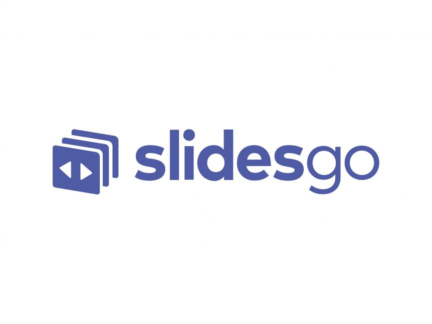
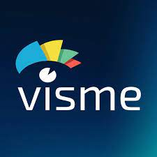

<html><title>power point presentation</title></html>
<head><h1>powerpointpresentations</h1></head>


<body>
 <p></p>   
    
    
    1.<a href="https://tome.app/" >Tome</a></body>
    


<p>Speed, meet quality. Tome helps you express ideas quickly without cutting corners or sacrificing subtlety. It’s more engaging than a deck, and easier to build than a webpage.

        Enter any prompt and create a compelling starting point for your presentation in minutes. It feels good to get work out of your head and into the world.
       
       
       
       
       
       
       <p></p>
        <p>2.<a href="https://slidesgo.com/ai-presentations">Slidesgo</a></p>
        <p>When lack of inspiration or time constraints are something you’re worried about, it’s a good idea to seek help. Slidesgo comes to the rescue with its latest functionality—the AI Presentation Maker! With a few clicks, you’ll have wonderful slideshows that suit your own needs. And it’s totally free

            <p>
            <p>3.<a href="https://www.visme.co/ai-presentation-maker/"> visme</a></p>
            <p>Save time and create beautiful designs quickly with Visme AI. Available inside the Visme template library, this generator tool is ready to receive your prompts and generate stunning ready-to-use presentations in minutes.</p>